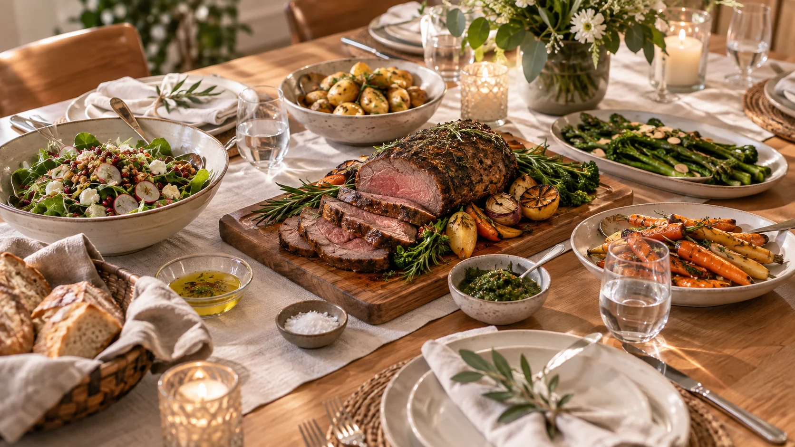
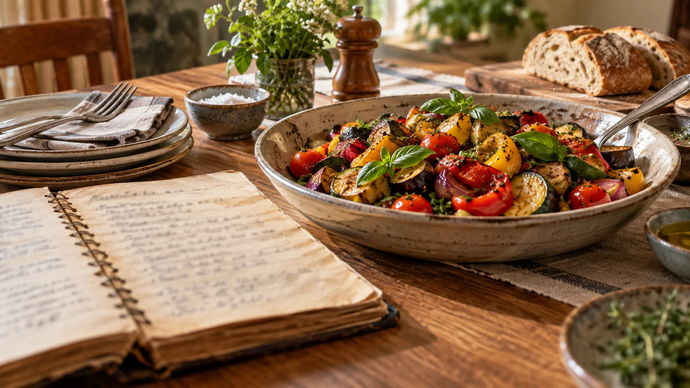
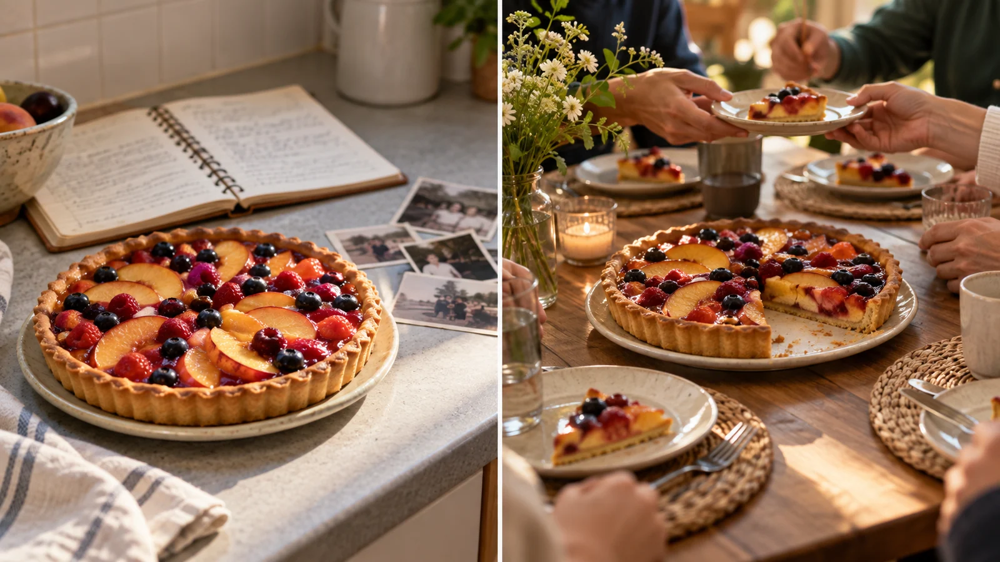
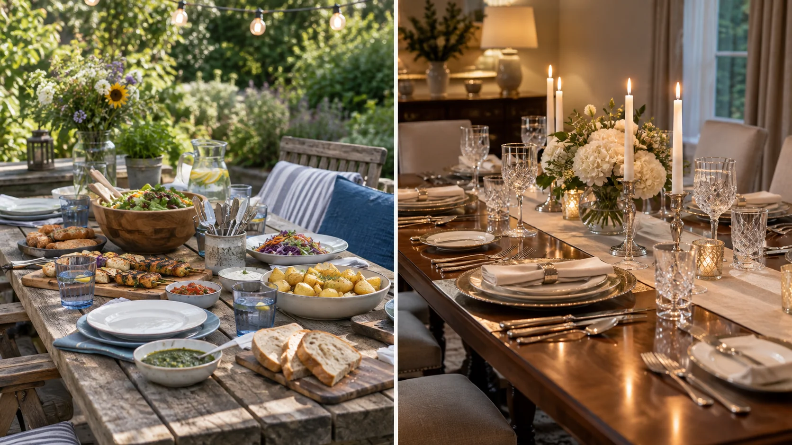
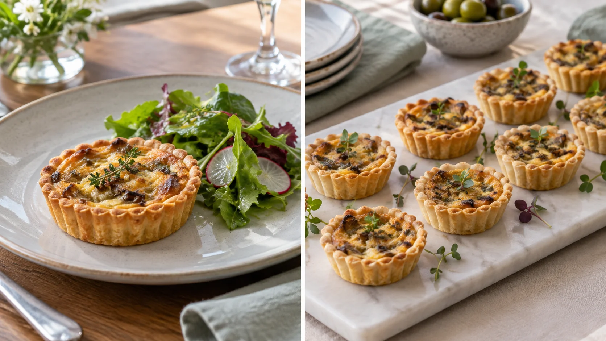
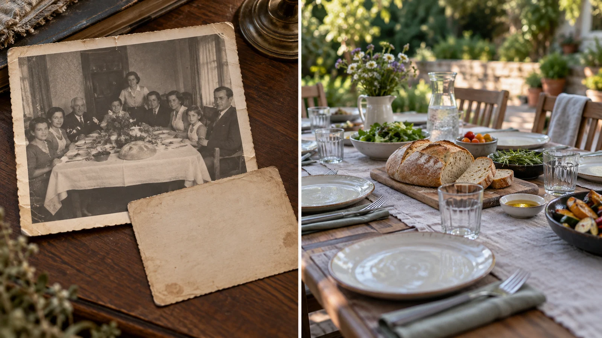
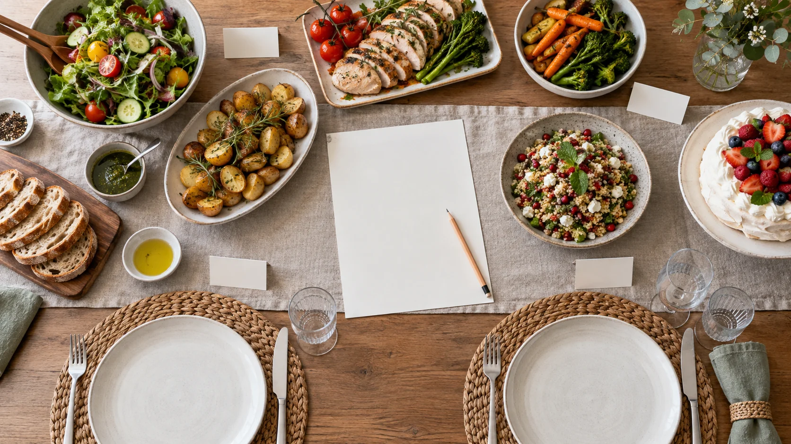
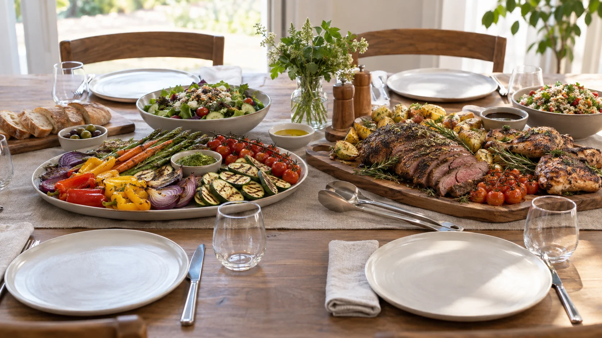
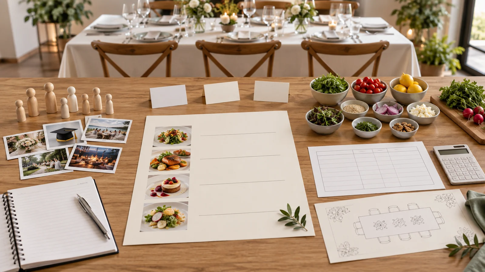

Module 3 of 4 · Term 3
Food for Special Occasions
Explore why food matters at celebrations, how traditions change, and how to justify a menu for the people and occasion in front of you.
Loading progress…

Notice: Which details suggest an occasion, and which meanings cannot be read from a picture?
Open larger ↗{kind=link}
Module 3 PowerPoint
Use the matching slides to preview and review the three learning sections.
Section 3.1
Food, identity and significance
The meaning of a celebration food comes from people and context, not from an ingredient alone.
Food does more than meet a physical need. Sharing, offering and preparing it can welcome people, mark a milestone or show care. A familiar dish may recall a person, place or family story. The same food might be ordinary on one day and deeply significant on another because of who prepares it, who gathers and what they are remembering. Food significance therefore cannot be judged by price, complexity or appearance alone. To understand it, ask what the food means to the people involved.
Occasions can be social, family, cultural, religious or historical; many fit more than one description. A birthday may centre on a family tradition. A community event may mark a shared history. Some guests may follow religious food practices while others within the same community choose differently. Identity is personal as well as collective, so one person cannot speak for every member of a group. Respectful investigation uses reliable accounts and, where possible, the voices of people who take part. It avoids claiming that one dish represents an entire culture.
Food choices communicate meaning through more than a name. Ingredients, serving style, colour, aroma and the act of eating together can all contribute. A food that is easy to share may encourage conversation; a carefully presented portion may suit a formal gathering. These are design possibilities, not rules. A planner needs to consider the actual setting and guests before deciding which features matter. Presentation should support the purpose of the event while keeping the food suitable for those who will eat it.
When you explain the significance of a food, separate evidence from assumption. Name the occasion and the group or person whose practice you are discussing, cite where the information came from and explain the connection rather than simply listing ingredients. Consider whose perspective is missing. A thoughtful choice also asks whether guests can access and enjoy the food, including guests with dietary needs. Significance and inclusion belong together: a menu can honour a tradition while offering considered choices for the people present.

Notice: Who would you ask about this dish and its meaning?
Open larger ↗{kind=link}
At a family reunion, a shared dish may matter because relatives associate it with a grandparent. The explanation should name that family connection; it should not claim the dish means the same thing to everyone from the family's cultural background.
Explore the evidence

Notice: Who could explain what this dish means in this setting?
Open larger ↗{kind=link}
Video candidate · final check pending
Koro's Hāngi | Doc Edge | The Spinoff · The Spinoff

Watch from 03:05 to 03:25. Pause and answer the question below.
This is one Reid whānau account of family connection. Watch only 03:05–03:25 for this lesson; the full film includes language outside this segment. This is not a practical safety demonstration or a claim about every Māori community.
If the player is blank or unavailable, use the YouTube link or follow the non-video path below.
Watch for: At 03:05–03:25, what do the speakers say about family connection, and how does that give the food significance beyond its ingredients?
If you cannot watch: Read the adjacent explanation and fictional family reunion example. Identify whose family account would establish the dish's meaning, then write one question to ask before attributing that meaning.
See all course videos →Non-video pathway: compare two short, fictional occasion descriptions and annotate what each food choice communicates and whose voice would need checking.
- Fictional occasion A: a family serves a familiar dish at an annual reunion because it connects generations. Ask which family member should explain its meaning.
- Fictional occasion B: a community group chooses food for a public celebration. Ask whose traditions, needs and access have been considered before describing the choice.
Open the posted Food Significance slides ↗ (school access may be required)
Learning activity 3.1 · 10 questions + written response
Formative learning evidence. Choose an option to see feedback and use the help link if needed.
Written challenge
Explain how a planner could choose food that has meaning for a family or community occasion while respecting the different people attending.
Use these prompts to build one response:- Name an occasion and explain whose perspective you would seek.
- Connect one possible food or serving choice to the occasion's meaning, with the type of evidence you would use.
- Explain how you would check guests' needs and adapt the plan without assuming that one tradition fits everyone.
Use at least two developed sentences so this response counts towards your section progress.
Success looks like:- Links a food decision to people and occasion using a justified source, rather than appearance or stereotype.
- Explains at least one inclusive adjustment and acknowledges variation within groups.
Section 3.2
Celebrations across time and place
Traditions can continue, change and travel; a careful comparison asks what changed and why.
Celebration foods have histories. Families and communities pass on knowledge, but their menus are not frozen in time. Migration, trade, technology, local ingredients, cost and changing household routines can alter what is available and how people prepare or serve food. A new version may still carry a familiar purpose, such as welcoming visitors or marking the start of a year. Describing change as a loss of 'real' tradition is often too simple. Ask which elements people choose to preserve, which they adapt and why.
Comparing celebrations across places requires more than listing dishes. New Year is an example: the timing, meaning and foods can differ between communities, and people within a community may celebrate in different ways. A useful comparison names the specific community, place and time described by a trustworthy source. It looks at the purpose of the food, who prepares or shares it, the setting, and any evidence of change. It also avoids treating one image or one household as a complete picture of a nation.
Global connections can make ingredients and ideas more available. A family may use a local ingredient in a remembered dish, or a food business may adapt a menu for its customers. These choices can create new forms of celebration food. They can also raise questions about who gets credit, whether a food is described accurately and whether its cultural context has been removed. A respectful account attributes the people or community behind an idea and does not rank versions as more or less authentic without evidence from those involved.
History is built from evidence. A dated menu, a first-hand recollection, an archive photograph and a contemporary article can each answer different questions. An old menu may show what was listed or planned for one event, but not what was actually served or eaten. A present-day recollection may explain meaning, but memory has limits. Cross-check sources and distinguish what they show from what you infer. When planning for real guests, historical examples can inspire questions, not prescribe a menu. Current preferences, resources and dietary needs still matter.

Notice: What can you observe, and what needs historical or cultural evidence?
Open larger ↗{kind=link}

Notice: How might the occasion and service plan affect the format?
Open larger ↗{kind=link}
A family now living in NSW might use a locally available ingredient in a dish linked to a yearly gathering. Compare the current choice with a family account of an earlier version: identify what changed, what meaning stayed and what remains uncertain.
Explore the evidence

Notice: What could you observe, and what historical source would you still need?
Open larger ↗{kind=link}
Video candidate · final check pending
What's on the table for Persian New Year? · CBC News

If the player is blank or unavailable, use the YouTube link or follow the non-video path below.
Watch for: Which Haft-Sin objects does the speaker explain, and what meaning does she give them?
If you cannot watch: Use the section’s dated menu and present-day account comparison; record what each source actually establishes and whose interpretation is still needed.
See all course videos →Non-video pathway: inspect a dated menu and a modern family account supplied for class discussion; mark observation, inference and missing perspective in different colours.
- Fictional archive card dated 1970: a community hall menu lists a shared dinner. The date and dishes are observations; their meaning to guests cannot be assumed.
- Fictional present-day account: a family says one dish reminds them of relatives. It gives one perspective; ask who else would tell a different story.
Open the posted Historical Food Chronicles slides ↗ (school access may be required)
Learning activity 3.2 · 10 questions + written response
Formative learning evidence. Choose an option to see feedback and use the help link if needed.
Written challenge
Compare how a celebration food could keep a familiar meaning while changing across time or place, and evaluate what evidence would support your explanation.
Use these prompts to build one response:- Describe a hypothetical or well-sourced example, naming the people, place and occasion.
- Explain two possible reasons for change and one purpose that may continue.
- Identify what a dated source and a first-hand account could each show, and one limit of either source.
Use at least two developed sentences so this response counts towards your section progress.
Success looks like:- Explains continuity and change without claiming one version represents everyone.
- Uses at least two evidence types and distinguishes a supported observation from an inference.
Section 3.3
Plan for an occasion
A strong occasion menu begins with a brief and can be explained against clear criteria.
Planning starts with a design brief: what is the occasion, who is attending, where will food be served and what experience should it create? A small family gathering and a large community function may need different service approaches even if they share a theme. The number and characteristics of diners, time, money, available ingredients, equipment and people's skills all affect what is feasible. A menu should be judged against these real constraints, not only against a photograph of a finished dish.
Several criteria work together. Appeal includes colour, aroma, flavour, texture and presentation, while nutritional value asks whether the range of choices is appropriate for the guests and occasion. Cultural or religious considerations and personal preferences need to be investigated, not guessed. A dietary requirement, especially a food allergy, requires accurate information and careful communication. An attractive label such as 'allergen free' is not a substitute for checking ingredients and the possibility of unintended allergen contact. Follow the teacher's current practical and food-safety directions for any class preparation; a website plan cannot certify a meal as safe for a particular person.
A menu is a coordinated set of choices. Variety can help guests find a suitable option, but extra dishes also consume money, time and work space. Decide what each item contributes and whether the group can present it consistently. A workflow plan then sequences the work and allocates responsibilities: which tasks depend on others, what must be ready before service and who communicates changes. The purpose is to see pressure points before the event. It is not a fixed recipe or a replacement for local safety instructions.
Evaluation uses the brief as a test. Before choosing, compare possible menus against criteria such as meaning, guest suitability, resources, presentation and service. After a trial or event, gather evidence rather than relying on 'it looked good': note feedback, timing, waste and whether people could make informed choices. Explain trade-offs. A simpler menu may better meet the brief if it can be produced and served reliably. An improvement should say what would change and why that change would better serve the actual guests.

Notice: What must be decided before these places are filled?
Open larger ↗{kind=link}

Notice: What specific guest needs would you still have to confirm?
Open larger ↗{kind=link}
For a community afternoon event, a planner compares two hypothetical menus against guest information, available resources and desired atmosphere. A shorter menu might be selected if the team can serve it more reliably and offer clearer dietary information.
Explore the evidence

Notice: Which decision depends on information from the people involved?
Open larger ↗{kind=link}
Video gap · use the learning path below
The teacher-posted traditions clips demonstrate cultural meaning or history but do not teach the planning decisions in this section. No source-fit planning clip has passed review.
Focus question: Which guest needs and limits must be known before a menu choice can be justified?
If you cannot watch: Compare proposal A and B in this section against a named occasion brief, then revise one decision after checking ingredient information and budget.
See all course videos →Non-video pathway: read two hypothetical menu proposals for the same event and annotate which brief criteria each meets, what evidence is missing and one justified revision.
- Proposal A: a shared buffet gives guests several choices but provides no ingredient information. Which brief criterion is unresolved?
- Proposal B: individual portions provide clear ingredient cards but exceed the stated budget. What could be revised without guessing a recipe or safety procedure?
Open the posted Global New Year Traditions slides ↗ (school access may be required)
Learning activity 3.3 · 10 questions + written response
Formative learning evidence. Choose an option to see feedback and use the help link if needed.
Written challenge
Justify a menu approach for a hypothetical special occasion and evaluate one trade-off in your choice.
Use these prompts to build one response:- Define the occasion, setting, diners and two important constraints.
- Explain how your menu approach addresses meaning, appeal, nutritional consideration and guest needs.
- Identify one resource or service trade-off, explain your choice and describe evidence you would gather afterwards.
Use at least two developed sentences so this response counts towards your section progress.
Success looks like:- Uses explicit criteria from the brief to justify the menu rather than listing attractive foods.
- Addresses dietary information responsibly and evaluates a trade-off with a possible evidence-based improvement.
Review this module
These three checks sit after their learning sections. Revisit any one directly; your work stays saved on this device.
- Food, identity and significanceNot started
- Celebrations across time and placeNot started
- Plan for an occasionNot started